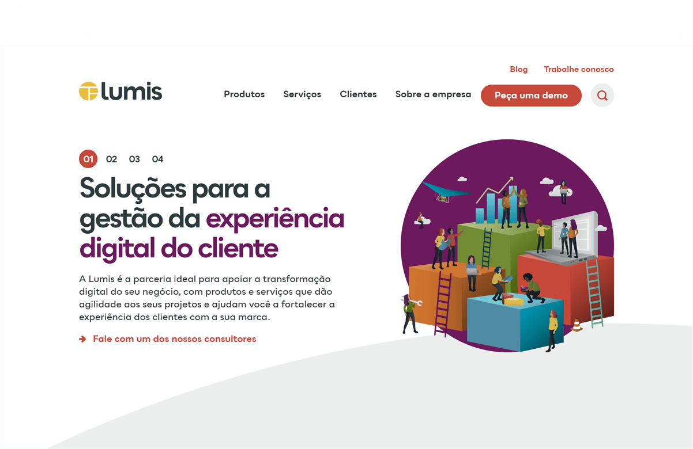
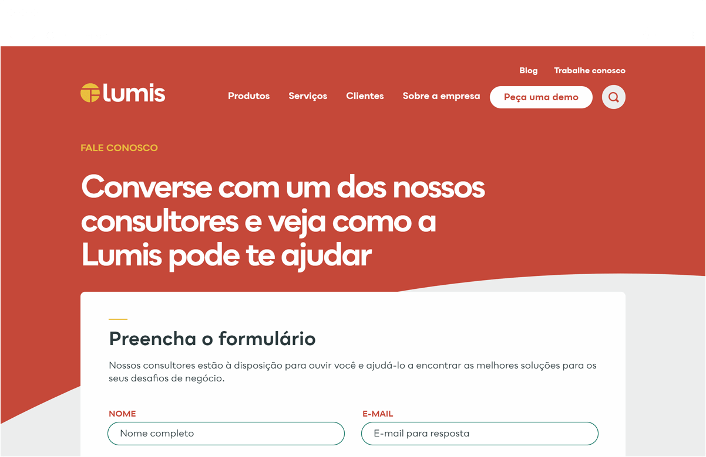

<div class="modal__wrapper">
<div class="modal__scroller">
<div class="modal__header">
<h2 class="modal__title">Lumis</h2>
<h3 class="modal__tags">
<span class="modal__tag">UX/UI</span>
<span class="modal__tag">Front End</span>
<span class="modal__tag">Branding</span>
</h3>
</div>
<div class="modal__content">
<div class="modal__editable">
<p>Lumis is the pioneer in the market for customer experience platforms, content management and collaboration software .</p>
<p>
I first redesigned the company's logo and brand tone. The idea was to give the brand a modern feel and reposition Lumis as more of a tech company and less of an old school IT coorporation. Next, for the website I did the UX/UI project, as well as the front end developement, and also all the backend implementation inside the LumisXP plataform.
</p>
<!--p>You can check this project live on: <a href="https://lumis.com.br/" target="_blank">lumis.com.br</a></p!-->
<figure class="modal__image--full">

</figure>
<figure class="modal__image--full">

</figure>
<figure class="modal__image--full">

</figure>
<figure class="modal__image--small">

</figure>
<figure class="modal__image--small">

</figure>
</div>
</div>
</div>
</div>
